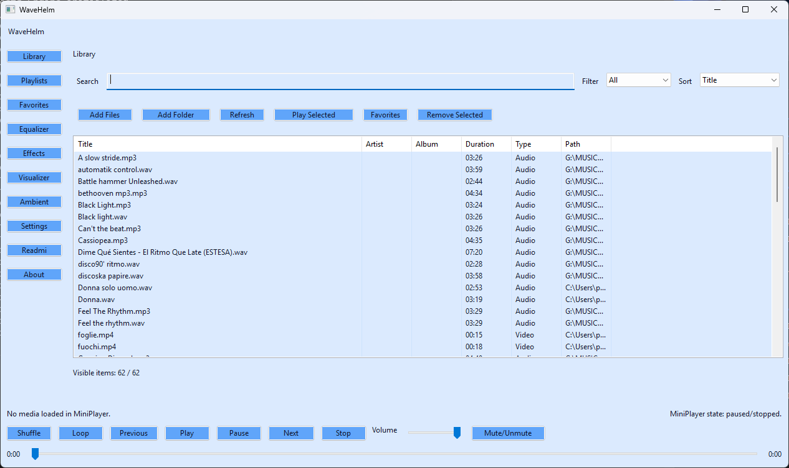
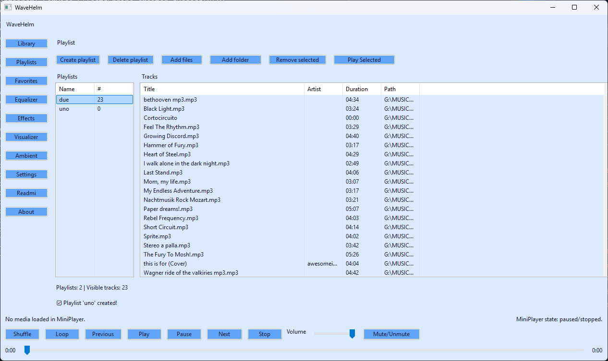
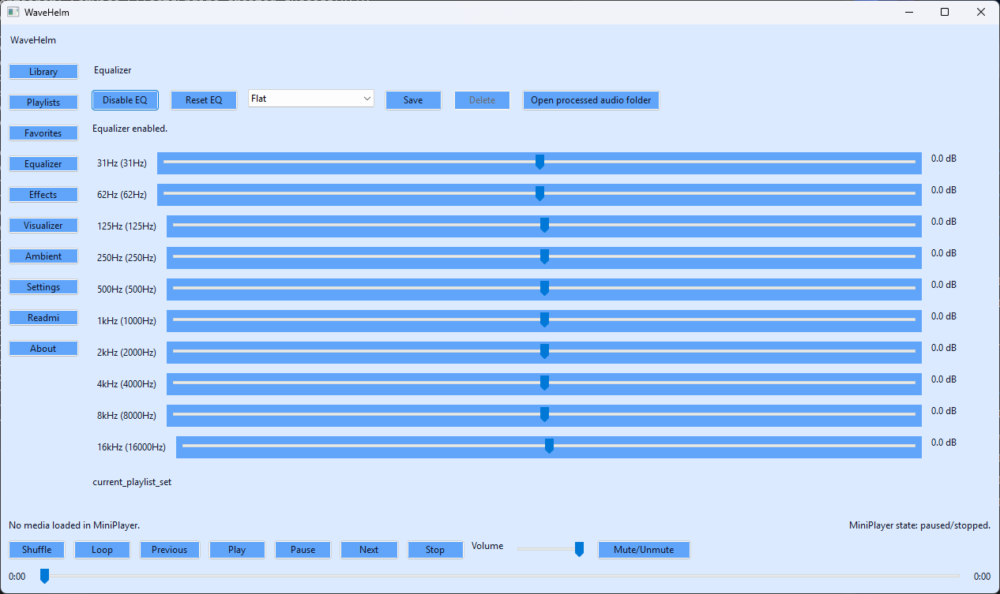
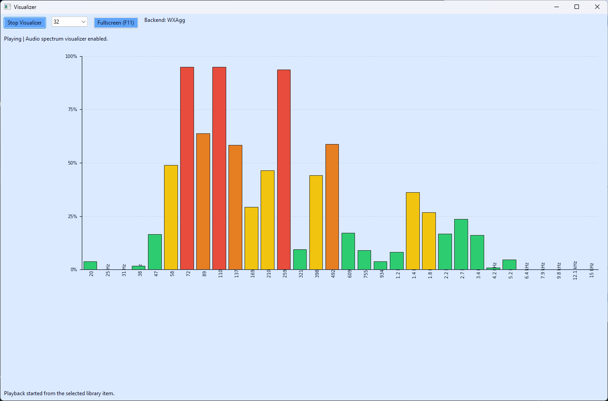
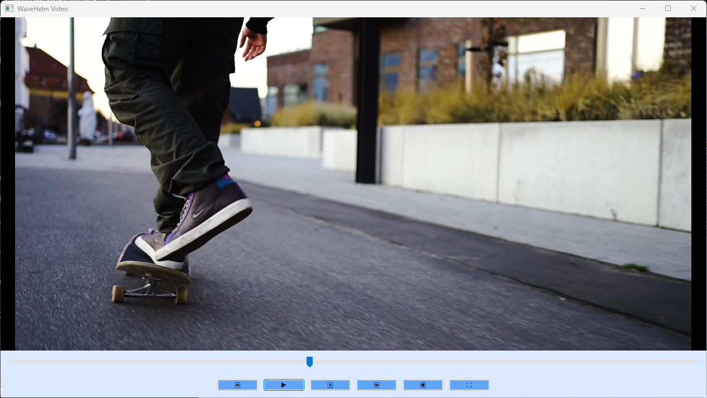

Playback and library workflow
Import files or folders, search and sort your local catalog, reopen favorites, and play media from the library, playlists, or direct selection flows.
Play your local audio and video, shape the sound with an equalizer and effects, add ambient layers, and organize playlists and favorites. Keep the visualizer alongside your music or in its own window.
WaveHelm 1.0.3 · Active beta · Windows x64 installer available.
Read the installation guide or view the release notes and checksums.

Playback, sound controls, and a local library in one desktop application.
Import files or folders, search and sort your local catalog, reopen favorites, and play media from the library, playlists, or direct selection flows.
Built-in equalizer, effect controls, processed-audio export paths, and a separate ambient playback layer for mixed listening sessions.
Maintained Windows runtime with Media Foundation video playback, selectable audio and subtitle tracks, and a detached video window.
Explore the library, sound controls, visualizer, and detached video window.




For normal use, choose the Windows x64 installer. Python setup and development tools are for running from source.
Video support depends on the media components and codecs available on your Windows system.